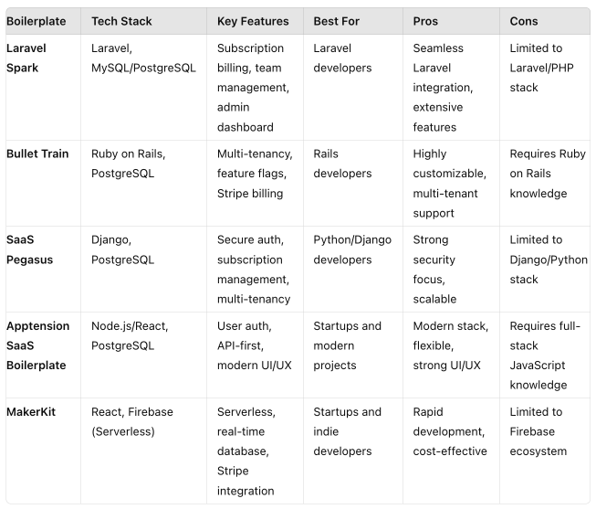

Top 5 SaaS Boilerplates for Rapid SaaS Development
Introduction
Building a Software as a Service (SaaS) application from scratch can be time-consuming and complex, especially when considering the need for robust features like user authentication, subscription management, and billing systems. This is where a SaaS boilerplate comes into play—a pre-configured, reusable codebase that offers a solid foundation for rapid SaaS development. Whether you're a seasoned developer or a startup looking to launch quickly, SaaS boilerplates can dramatically speed up your development process.
In this article, we'll explore the top five SaaS boilerplates that can help you jumpstart your SaaS project. We'll dive into their features, technology stacks, use cases, and the pros and cons of each, providing you with a comprehensive guide to choosing the right solution for your needs.
Benefits of Using a SaaS Boilerplate
- Cost and Time Efficiency: SaaS boilerplates save time and money by providing pre-built components, reducing the need for custom development.
- Consistency and Best Practices: These boilerplates are often built following industry best practices, ensuring a consistent and reliable foundation for your application.
- Scalability: Many boilerplates are designed with scalability in mind, making it easier to grow the application as the user base increases.
5 Awesome SaaS Boilerplates For SaaS Application Development
Below is a list of five (5) best SaaS boilerplates that can help you jumpstart your SaaS development:
1. Laravel Spark
Laravel Spark is a comprehensive SaaS boilerplate specifically designed for the Laravel framework. It simplifies the development of SaaS applications by offering built-in features like subscription management, user authentication, and team collaboration.
Use Cases: Ideal for developers working within the Laravel ecosystem who need a quick, robust solution for building SaaS products.
Technology Stack
- Backend: Laravel (PHP)
- Database: MySQL/PostgreSQL
- Payment Processing: Stripe, Paddle
- Authentication: Laravel's built-in authentication
Features
- Subscription billing with Stripe and Paddle
- User authentication and social logins
- Team management with role-based access control
- In-app notifications and email notifications
- Ready-to-use admin dashboard
Pros
- Seamless integration with Laravel
- Extensive feature set for typical SaaS needs
- Strong community support and documentation
Cons
- Limited to the Laravel/PHP stack
- May require customization for non-standard use cases
2. Bullet Train
Bullet Train is a powerful SaaS boilerplate built for Ruby on Rails. It’s particularly suited for multi-tenant applications and provides a flexible and customizable foundation for scalable SaaS products.
Use Cases: Best for Rails developers who need a multi-tenant SaaS solution with advanced customization options.
Technology Stack
- Backend: Ruby on Rails
- Database: PostgreSQL
- Payment Processing: Stripe
- Authentication: Devise
Features
- Multi-tenancy with data isolation
- Feature flags for tenant-specific customizations
- Integrated Stripe billing and subscription management
- Role-based access control
- Comprehensive admin interface
Pros
- Highly customizable and flexible
- Excellent support for multi-tenant applications
- Strong integration with the Rails ecosystem
Cons
- Requires knowledge of Ruby on Rails
- Potentially steep learning curve for beginners
3. SaaS Pegasus
SaaS Pegasus is a Django-based boilerplate focused on security and scalability. It is designed to help developers build SaaS applications rapidly while ensuring the highest security standards.
Use Cases: Perfect for Python/Django developers looking for a secure, scalable solution for building SaaS applications.
Technology Stack
- Backend: Django (Python)
- Database: PostgreSQL
- Payment Processing: Stripe
- Authentication: Django Allauth
Features
- Secure user authentication and social logins
- Subscription management with Stripe integration
- Multi-tenancy support with data isolation
- Background task processing with Celery
- Admin dashboard for managing users and subscriptions
Pros
- Strong focus on security best practices
- Well-suited for Python/Django projects
- Scalable and feature-rich
Cons
- Limited to the Django/Python stack
- May require customization for complex use cases
4. SaaS Boilerplate (by Apptension)
Developed by Apptension, this SaaS boilerplate offers a modern and polished solution for building SaaS applications. It’s designed to be flexible and scalable, catering to a wide range of use cases.
Use Cases: Ideal for startups and development teams looking for a modern, scalable SaaS boilerplate with a strong focus on user experience.
Technology Stack
- Backend: Node.js/Express
- Frontend: React.js
- Database: PostgreSQL
- Payment Processing: Stripe
- Authentication: Passport.js
Features
- User authentication with social login options
- Subscription management and billing with Stripe
- Responsive and modern UI/UX design
- API-first approach for easy integrations
- Role-based access control
Pros
- Modern tech stack with React and Node.js
- Scalable architecture with microservices support
- Focus on user experience and responsive design
Cons
- Requires knowledge of Node.js and React
- Potentially higher setup complexity
5. MakerKit
MakerKit is a versatile SaaS boilerplate that supports both Next.js and NestJS, offering a full-stack solution for modern SaaS applications. It’s known for its flexibility and ease of use, making it a popular choice among developers.
Use Cases: Best for developers looking for a flexible, full-stack solution that supports both front-end and back-end development in modern JavaScript.
Technology Stack
- Frontend: Next.js
- Backend: NestJS
- Database: PostgreSQL
- Payment Processing: Stripe
- Authentication: NextAuth
Features
- Full-stack support with Next.js and NestJS
- Integrated authentication with NextAuth
- Subscription management with Stripe
- API-first architecture
- Customizable and modular design
Pros
- Supports modern JavaScript frameworks
- Highly flexible and modular
- Strong focus on developer experience
Cons
- Requires knowledge of both Next.js and NestJS
- Potentially complex setup for beginners
Summary Table
Best Practices for Selecting a SaaS Boilerplate
- Assess your development team's expertise and choose a boilerplate that aligns with their skill set.
- Consider the scalability requirements of your project and select a solution that can grow with your application.
- Evaluate the built-in features and decide if they meet your project's specific needs.
- Check the community support and documentation to ensure long-term sustainability.
Future Trends in SaaS Development
Emerging trends such as serverless architecture, microservices, and low-code platforms are likely to influence the evolution of SaaS boilerplates. These trends will continue to shape how developers approach building scalable and efficient SaaS applications.
- Low-code/No-code Platforms: The rise of low-code/no-code platforms is democratizing SaaS development, making it accessible to non-developers.
- AI and Machine Learning: Integrating AI and machine learning into SaaS products is becoming increasingly popular, offering more personalized and intelligent services.
- Microservices Architecture: Microservices are gaining traction for building scalable, maintainable SaaS applications, allowing for more modular and flexible development.
- Serverless Computing: Serverless architectures are enabling developers to build and deploy SaaS applications with less overhead, reducing costs and improving scalability.
Conclusion
Choosing the right SaaS boilerplate is crucial for the success of your project. Each of the boilerplates discussed in this article offers unique advantages, depending on your team's expertise and project requirements. By carefully considering the pros and cons of each option, you can select the best boilerplate to accelerate your SaaS development process.
Remember, the key to successful SaaS development lies not only in choosing the right boilerplate but also in following best practices and staying updated with the latest trends. With the right tools and strategies, you can build a robust, scalable, and future-proof SaaS product.